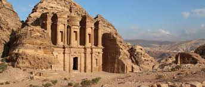

Petra

Petra es una ciudad arqueológica famosa en el desierto,
al sudoeste de Jordania. Fundada alrededor del 300 a. C.,
era la capital del Reino Nabateo. Se puede acceder a través
de un estrecho cañón llamado Al Siq y contiene tumbas y templos tallados
en acantilados de arenisca de color rosa,
motivo por el que se la conoce como la "Ciudad Rosa".